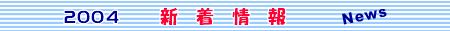

8月、岩鞍高原とその周辺では夏祭りが開催されています。太鼓・笛の音色にお囃子等々夏の夜に賑やかに響き渡ります。昔も今も変わらぬ風情ある風景です。
ホワイトワールド尾瀬岩鞍【ヤナギラン祭り】開催
【期 間】7 月 3日（土）〜 8月 15日（日） 【移植地】7 月 3日（土）〜 7月 31日（土）（この期間18:30〜21:00までライトアップ） 【自生地】7 月 17日（土）〜 8月 15日（日）（ゲレンデ内チャンピオンBコース） ★ ホテル前ガーデンにてバーベキューや生ビールなどもお楽しみいただけます。 ソフトクリームの販売や高原野菜の直売も行いますので是非皆様お越しください！
ノナカ周辺では "水芭蕉の開花" が間近です！ 水芭蕉にちなんだ各イベントも行われますので是非お越し下さい。